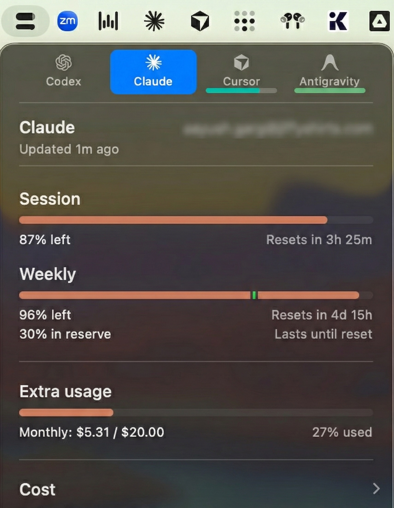
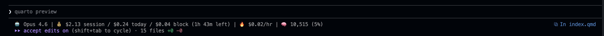
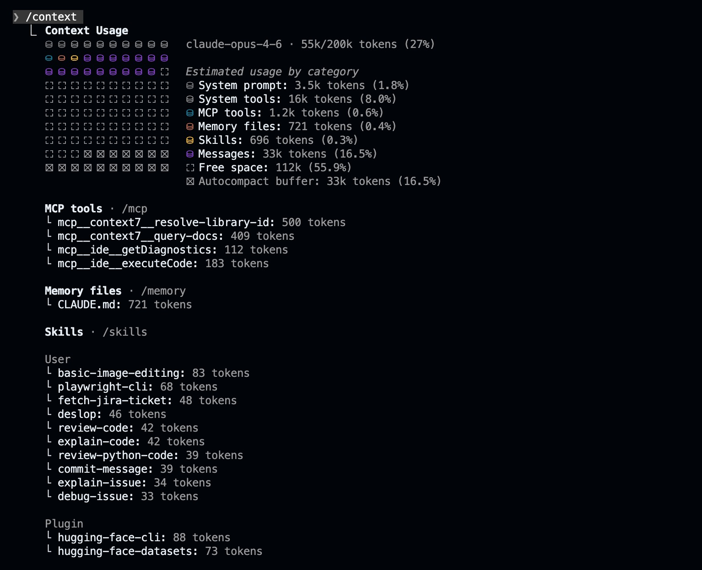
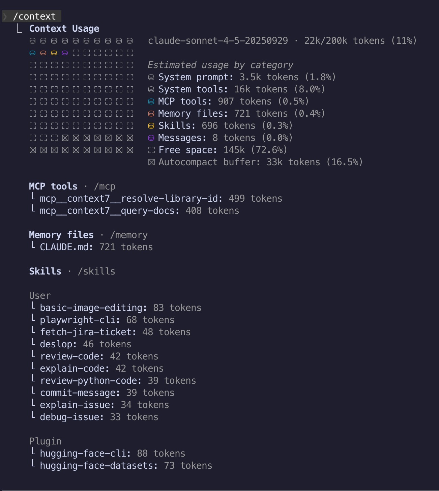
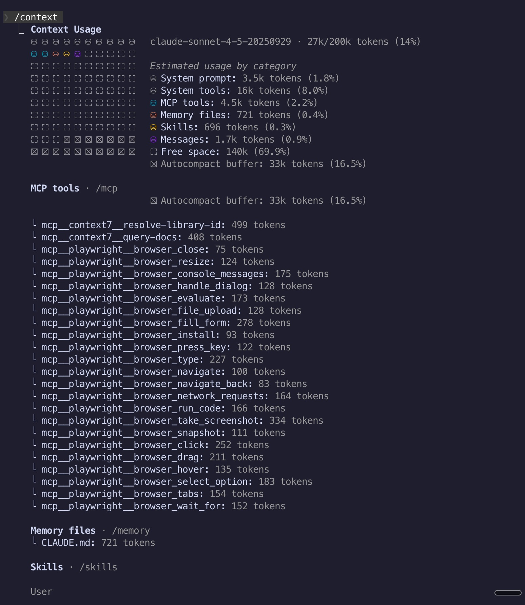
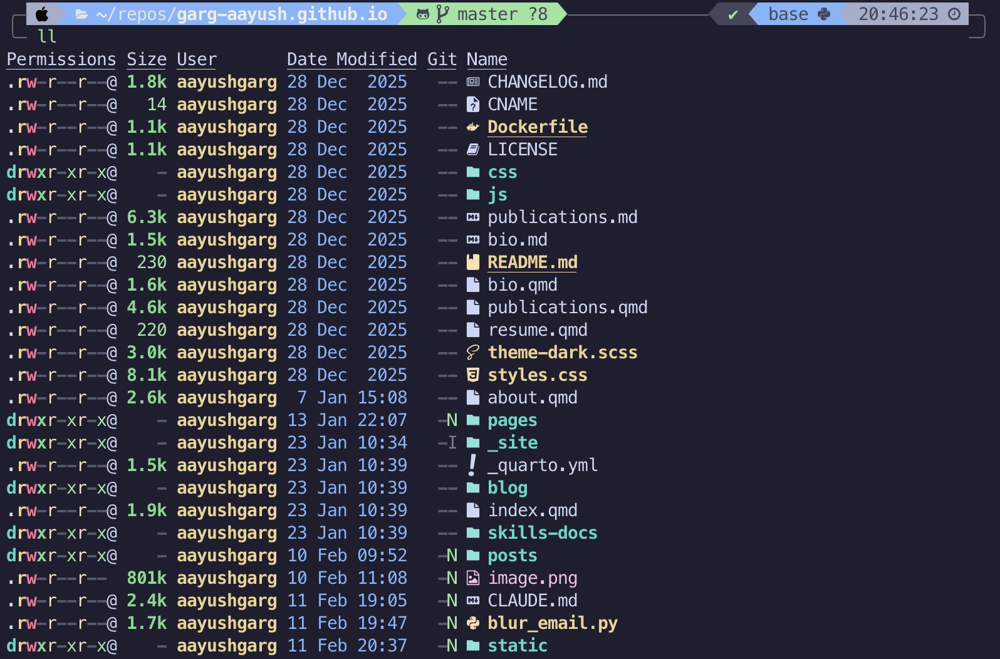
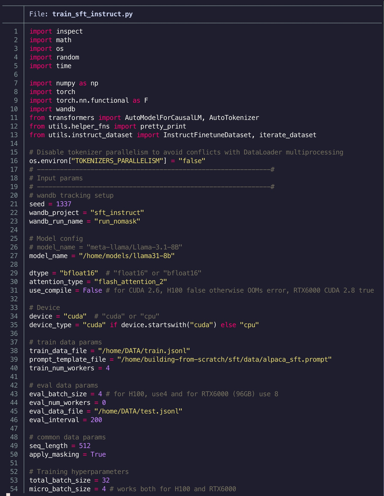
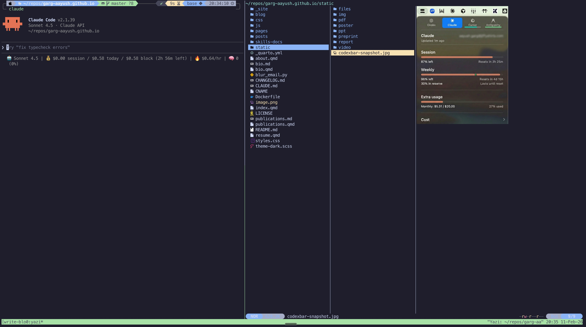

Tools for Better Claude Code and Terminal Experience
I have been using Cursor for a long time and recently started using Claude Code in my day-to-day work. Thus, over the past few weeks I have spent a lot more time in the terminal and a handful of tools and practices have stuck with me. None of them are groundbreaking or elaborate but have made my overall experience noticeably more productive. This is a short post sharing what has worked for me in case any of it is useful to you.
Tracking Your AI Usage
If you are using Claude Code you are prone to hitting the session limit more often than not. Thus, knowing how much you are consuming and session limits comes in quite handy. This visibility across claude code and different providers is quite useful.
CodexBar
CodexBar is a lightweight menu bar app that tracks usage and limits across different AI providers. It shows session and weekly limits (credits) right in the menu bar. This is genuinely useful as you always know where you stand.

ccusage
ccusage is a cli tool for analyzing claude code usage from local json files. It gives you session wise, daily and monthly breakdowns of your usage. It is useful for understanding your consumption patterns and keeping an eye on how much you are actually using. Most importantly, it is a great tool to have inline usage info in claude code.

Managing Your AI Context
One of the biggest challenges with AI assistants is getting the right context in and keeping the context window healthy.
Context Commands: /context, /clear, /compact
Most of us are aware of these three Claude Code commands but more often than not, maybe out of habit, we dont use them often enough and end up hitting the session limit.
/context— it provides a great visualization of your current conversation context usage as a colored grid. I prefer to use it often to understand how much of the context window is consumed, loaded skills, mcps, tools and corresponding tokens used.
/clear— this completely resets your conversation history. I use it between unrelated tasks to start fresh with an empty context window avoiding both context degradation and session limit./compact [instructions]— It summarizes your conversation to free up context space while preserving important information.
Thumb rules I follow while using claude code:
- Haiku / Sonnet: I start a new conversation or use
/compactat ~50-60% context usage. Beyond this, I consistently see context rot with noticeable drop in model performance.- Opus: I can push it to ~70-80% but usually starts a fresh conversation whenever possible to save tokens and avoids hitting session limits.
- Never start a new task mid-conversation. Either compact or preferrably start a new one.
Context7
Context7 MCP server provides AI assistants with up-to-date documentation and code examples for various libraries and frameworks. As a developer, I find this genuinely useful as it solves the problem of outdated training data by fetching current docs in real-time. Whether I am writing boilerplate code, setting up tests or working with a library I have not used recently, Context7 ensures the AI has accurate and up to date API references instead of hallucinating outdated patterns.
The free plan gives you around 1000 API requests per month which is more than enough for most use cases. This is one MCP server I use regularly and recommend to everyone.
RepoMix and Jina Reader
Sometimes you need to provide context as a single file whether for web-based AI interfaces like ChatGPT or Claude where you cannot point at a codebase directly or when you want to feed a webpage content to an LLM.
RepoMix handles the codebase side. It lets you take a git repo or any local folder and concatenate all the files (based on a pattern) into a single file. You can create a context file for an entire repo or filter it down to just the files relevant to the bug or feature you are working on. It is on similar lines as Karpathy’s rendergit which renders any git repo into a single static HTML page for humans or LLMs.
Jina Reader handles the web side. It converts any HTML page into clean markdown which is much better than feeding raw HTML as context to an LLM. You just need to prepend https://r.jina.ai/ to any URL.
Prefer Skills Over MCP Servers
MCP server tool descriptions consume tokens upfront and often hundreds or even thousands of tokens regardless of whether you actually use them in that session. Skills on the other hand use progressive loading where Claude sees only the name and description (~30-100 tokens) at startup and loads the full instructions only when relevant.
For example, here is the difference in context usage between Playwright as an MCP server versus Playwright as a skill:
|
 |
 |
Difference in context usage between Playwright as a skill vs Playwright as an MCP server
My recommendation is to use skills whenever possible. For example, Hugging Face Skills and Playwright CLI Skills instead of corresponding mcp servers.
The llm CLI Tool
This is the tool I use a lot in terminal outside of Claude Code itself. Simon Willison’s llm is a command-line tool for interacting with LLMs directly from the terminal. It supports multiple providers and models, stores conversation logs and is endlessly composable with other CLI tools.
I still prefer working in iTerm2. I do not use agentic terminals like Warp. Cursor or claude code are my standard coding assistants but not everything needs a full agent session. For example while I am terminal, you sometimes need to quickly answer a question, run a bash or single command, explain/review a file. These are the tasks where llm comes in really handy. It is fast, intuitive to use and does not consume my Claude Code session limits.
One way I use llm in my day-to-day work is by wrapping it as shell functions in my .zshrc. Each function has a specific system prompt tuned for its task, giving me dedicated LLM-based commands I can use for without thinking. Here are some I use most often:
cmd <query> Convert natural language to a shell command
explain <question> [file] Answer a question, optionally using a file as context
image_qa <question> <image> Ask a question about an image (vision)
pycode [-x|--exec] <task> Generate a Python script from a task description
-x also execute the script via uv runThe pattern I follow for each function is the same: define a model, write a system prompt, wrap llm in a function. For example, here is the cmd function:
cmd
It converts natural language to a raw shell command (something we all need to do everyday).
CMD_LLM="gpt-5-mini"
CMD_SYSTEM_PROMPT="You are inside a macOS terminal. Output only the raw shell command(s). \
No formatting, no code blocks, no explanations, no extra text."
cmd() {
if [[ "$1" == "--help" || -z "$1" ]]; then
echo "Usage: cmd <natural language shell command>"
echo " Converts natural language to a raw shell command using LLM."
echo " Example: cmd 'find all png files larger than 1MB'"
return 0
fi
llm -m $CMD_LLM -s "$CMD_SYSTEM_PROMPT" "$1"
}$ cmd "find all png files larger than 1MB"
find . -name "*.png" -size +1MI would encourage you to write your own wrappers for whatever repetitive tasks you have. And since llm supports many providers and models, you can swap in whichever model works best for each task.
Upgrading Your Terminal Basics
The tools below are not AI-specific but make my terminal experience much better.
eza
eza is a feature rich replacement for ls with color highlighting, icons for different file types, git awareness and tree views.
I have the following aliases in my .zshrc:
alias lla='eza -alh --git --sort=modified --icons' # list view with hidden files
alias ll='eza -lh --git --sort=modified --icons' # list view sorted by timestamp
alias lt='eza -lh --git --sort=modified --tree --level=2 --icons' # tree view
bat
bat is simly cat with syntax highlighting, line numbers and git integration. It automatically detects the file type and renders accordingly.

yazi
yazi is a fast terminal file manager with support for previewing different file types including images and PDFs right in the terminal. This is especially useful when you are already deep in a terminal session with Claude Code and need to quickly browse files or check an image without switching to Finder.

Wrapping Up
None of these tools and tips are complex or elaborate and most of them are not even AI-specific. But together they have quietly improved how I work with better visibility into usage, healthier context windows, quicker LLM access from the terminal and a slightly nicer shell experience.